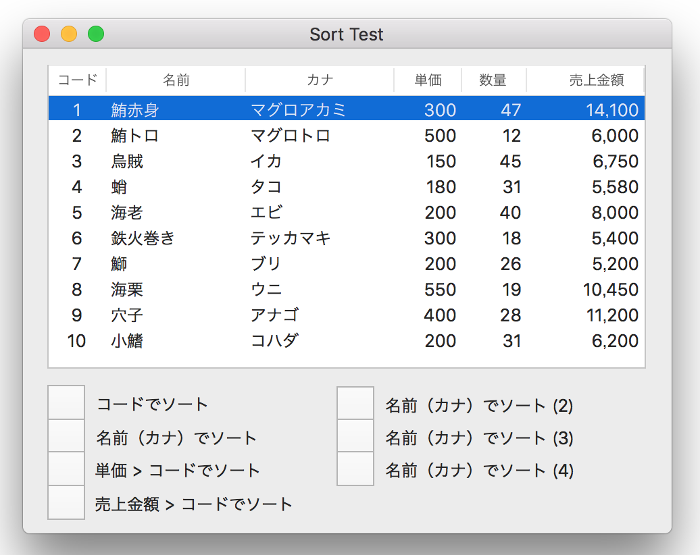

配列のソート

本章では、配列の要素にユーザ定義クラスのオブジェクトを持った配列のソート方法について説明する。
処理パターン
配列の要素をソート記述子の指定に従いソートし新しい配列として出力する。
ソート記述子が配列なのは、ソートキーを複数定義するため。要素の設定順はキーの優先順位となる。
ソート記述子（NSSortDescriptorクラス）にはソートキーと昇順/降順を指定する。ソートキーは配列の要素を構成するプロパティ名を文字列で指定する。この方法はKVCに基づく。
ソートの対象となるこのプロパティは、大小の比較を行う compareメソッドを実装していることが前提。基本クラスである NSString, NSNumber, NSDate等はデフォルトで実装済み。
ユーザ定義クラスもcompareメソッドを独自に定義すれば、基本クラスと同じように、
オブジェクトをソートキーのプロパティとして指定することができる。
以下、サンプルアプリを元に実装方法を説明する
使用するデータ
配列の要素はユーザ定義クラスの寿司ネタクラス（Sushi）とする。
寿司ネタクラスはメンバに売上クラス（Sales）を持つ
配列の作成
ソート方法
以下に示したコードをAppControllerに実装し、ボタンで起動すれば、配列が指定のソート方法によりソートされテーブルビューが更新される。
寿司ネタコードでソートする
ソート記述子による NSNumberの比較
寿司ネタの名前でソートする
ソート記述子による NSStringの比較
寿司ネタの単価ででソートする
ソート記述子による整数（NSString）の比較
寿司ネタの売上金額でソートする
ソート記述子による売上クラス（Sales）の比較
売上金額は、Salesクラスの単価と数量の掛け算の結果となる。Salesクラスに売上金額の大小を比較するcompareメソッドを定義すれば、Sushiクラスのメンバであるsalesプロパティをソートキーに指定すれば売上金額でソートできるようになる。
売上クラス（Sales）の比較メソッド
Sushiクラスでソートする
寿司ネタの名前（カナ）をソートキートする。
Sushiクラスには、カナの大小を比較する compareメソッドを定義する。ソート記述子のキーに nilを指定するのがポイント。
寿司ネタクラス（Sushi）の比較メソッド
ソート記述子にcompreメソッド名を指定する
ソート記述子にcompreメソッドを指定する方法
ソート記述子のselector引数にメソッド名を指定する。シグネチャが同じなら”comapare”以外の名前を指定できる。ユーザ定義クラスに複数の比較メソッドを定義するときに利用できる。この場合は、メソッド定義をヘッダファイルに記述し公開する。
寿司ネタクラス（Sushi）の比較メソッド
Cの比較関数を利用する
あまり使わないと思うが、compareメソッドの代わりに大小比較をC関数に実装することもできる。ソートの実行は、sortedArrayUsingFunctionメソッドを使用する。引数により関数へ任意の情報を渡すことができる。
寿司ネタクラス（Sushi）をカナで比較するC関数。（どこに実装してもかまわないが、Sushiクラスのファイルに実装してみた）